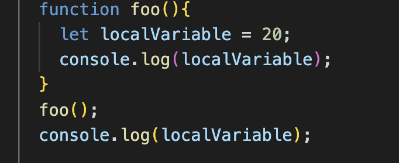

refer to visibility and accessibility of variable, functions, object in a particular part of code.
Global Scope: varaible declared outside of function or block have global scope. they are are accessible any from you code.
in above examle globalVariable has global scope. we can the assess this particular variable from anywhere in code.
Local Scope; variable which created or declared inside funciton has local scope. local scope mean that variable access only within the function or this particular curly bracket.

in above example we created the localVariable inside the function. local variable only in the function, it does exist outside of the function. if try to access console. it will give error message localVariable is not defined